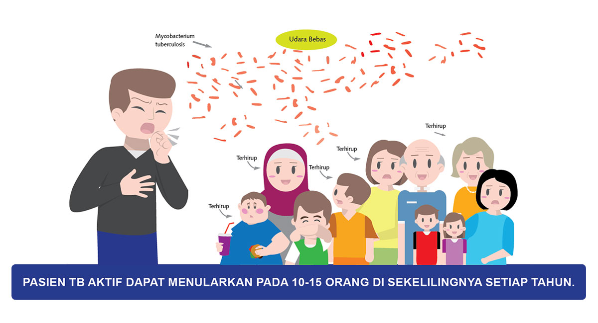
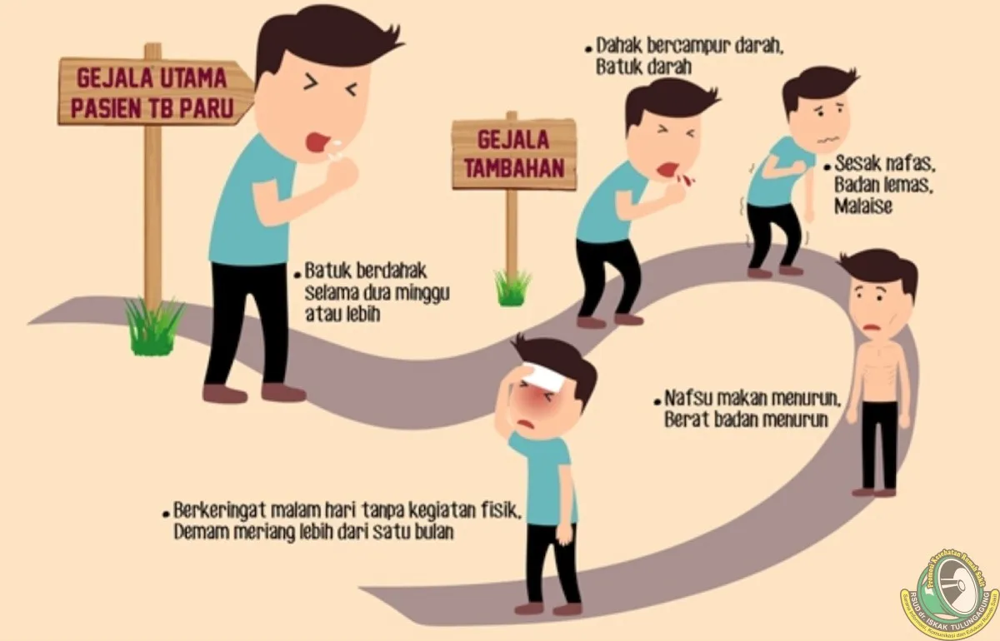
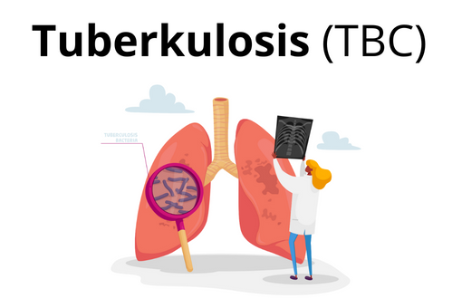
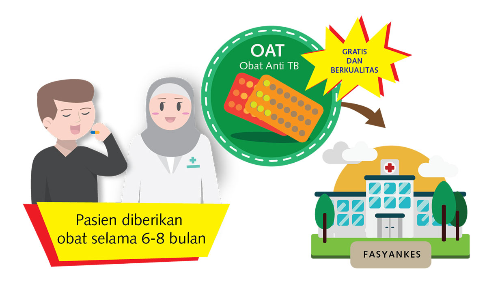

Penularan TB

sumber gambar:https://yki4tbc.org/apa-itu-tb-tbc/tuberkulosis-tb/penularan-tb/
Tuberkulosis (TB) adalah penyakit menular yang disebabkan oleh infeksi
mycobacterium tuberculosis. Pada tahun 1993, WHO menyatakan tuberkulosis
sebagai keadaan darurat global. Tuberkulosis dapat ditularkan melalui udara.
Penularan terjadi melalui partikel di udara, yang disebut droplet. Infeksi dapat
terjadi melalui air liur atau lendir dahak di udara yang terjadi ketika penderita TB
batuk atau bersin. Saat penderita TB bersin atau batuk, bakteri tuberkulosis
dilepaskan, yang kemudian terbawa ke udara dan masuk ke dalam tubuh orang lain
melalui udara yang mereka hirup
Gejala Klinis TB

sumber gambar: https://rsud.tulungagung.go.id/tbc-gejala-penyebab-dan-pengobatannya/
Diagnosis tuberkulosis dapat ditegakkan berdasarkan gejala klinis,
pemeriksaan fisik, pemeriksaan bakteriologis, radiologis, dan pemeriksaan
penunjang lainnya. Adapun gejala klinis tuberkulosis dibagi menjadi dua yaitu
gejala utama dan gejala tambahan sebagai berikut:
- Gejala utama yaitu batuk berdahak > 2 minggu.
- Gejala tambahan berupa:
- batuk darah;
- sesak napas;
- badan lemas;
- nafsu makan berkurang;
- penurunan berat badan yang tidak disengaja;
- malaise/ rasa tidak enak;
- berkeringat di malam hari tanpa kegiatan fisik;
- demam ringan lebih dari satu bulan;
- nyeri dada.
Selain gejala tersebut, perlu dilakukan pemeriksaan riwayat faktor risiko lain,
seperti kontak dekat dengan penderita TB, tempat tinggal kumuh dan padat
penduduk, serta orang yang bekerja di lingkungan dengan risiko terpapar infeksi
paru seperti tenaga medis atau penggiat TB.
Komplikasi Akibat TB

sumber gambar: yki4tbc.org/tuberkulosis-tbc/
Tanpa pengobatan, tuberkulosis dapat mengancam jiwa. Penyakit aktif TB
yang tidak diobati biasanya menyerang paru-paru, tetapi dapat menyebar ke bagian
tubuh lain melalui aliran darah. Komplikasi tuberkulosis meliputi:
- Nyeri punggung dan tulang belakang, merupakan komplikasi umum dari
tuberkulosis.
- Kerusakan sendi. Atritis tuberkulosis biasanya menyerang pinggul dan lutut.
- Radang meninges (meningitis). Radang ini dapat menyebabkan sakit kepala
yang berlangsung lama selama berminggu-minggu.
- Masalah hati atau ginjal. Hati dan ginjal membantu menyaring kotoran dan
limbah dari aliran darah. Fungsi tersebut akan terganggu apabila hati atau
ginjal terkena bakteri TB.
- Masalah jantung. Meski jarang terjadi, tuberkulosis dapat menginfeksi
jaringan di sekitar jantung sehingga menyebabkan pembengkakan
kemampuan jantung untuk memompa secara efektif.
Tujuan Pengobatan TB

sumber gambar: https://yki4tbc.org/apa-itu-tb-tbc/tuberkulosis-tb/pengobatan-tb/
Komplikasi akibat TB sangat berbahaya oleh karenanya pengobatan tuberkulosis segera sangat penting. Tujuan
pengobatan tuberkulosis adalah sebagai berikut:
- Menyembuhkan pasien sehingga dapat meningkatkan produktivitas dan
kualitas hidup;
- Mencegah kematian dan/atau kecacatan akibat tuberkulosis atau efek
lanjutannya;
- Mencegah kekambuhan;
- Mengurangi resiko infeksi tuberkulosis kepada orang lain;
- Mencegah resistensi terhadap obat anti tuberkulosis (OAT) dan penyebarannya.
Pemberian OAT merupakan bagian terpenting dari penyembuhan tuberkulosis dan
cara yang paling efektif untuk mencegah penyebaran tuberkulosis. Pada fase
awal/intensif, OAT diberikan setiap hari. Pada tahap awal pengobatan, OAT dengan
cepat mengurangi jumlah bakteri tuberkulosis dalam tubuh pasien dan
meminimalkan risiko infeksi. Jika dosis yang tepat diminum secara teratur pada
fase awal OAT, risiko infeksi biasanya menurun setelah dua minggu pertama fase
awal pengobatan. Fase awal juga dapat meminimalkan dampak dari sebagian kecil
bakteri TB yang mungkin telah resisten terhadap OAT sebelum memulai
pengobatan. Waktu inisiasi pengobatan untuk pasien TB sensitif obat (TBSO)
adalah dua bulan. Pengobatan dilanjutkan pada pengobatan lanjut. Tujuan
pengobatan lanjutan adalah membunuh sisa bakteri TBC yang tidak mati dini untuk
mencegah kekambuhan. Durasi pengobatan lanjut adalah 4-6 bulan